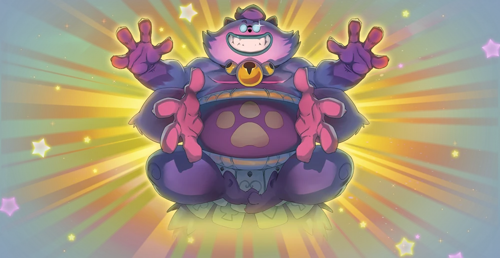
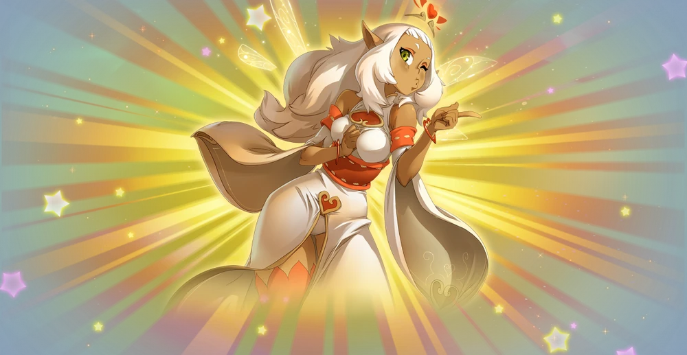
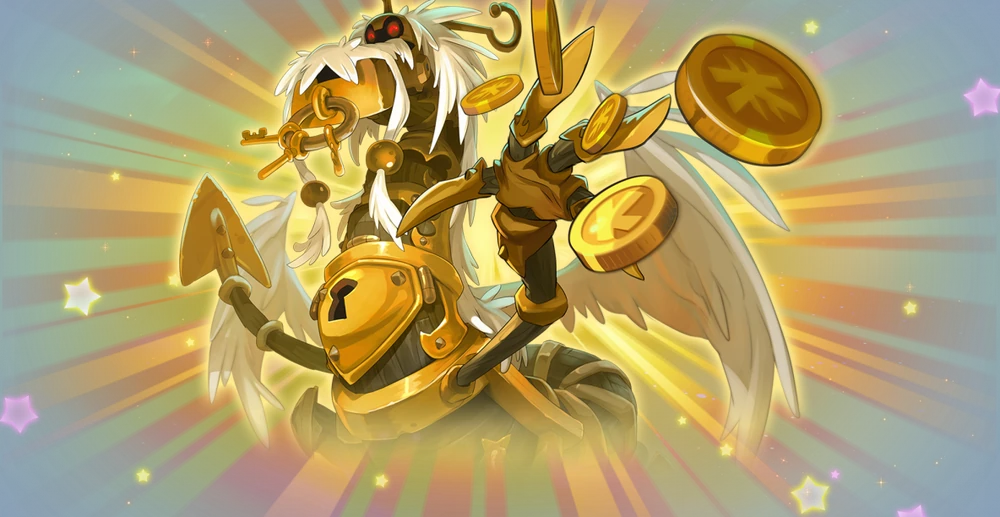
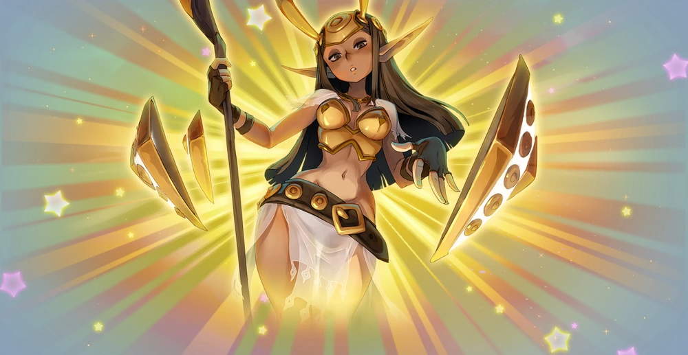
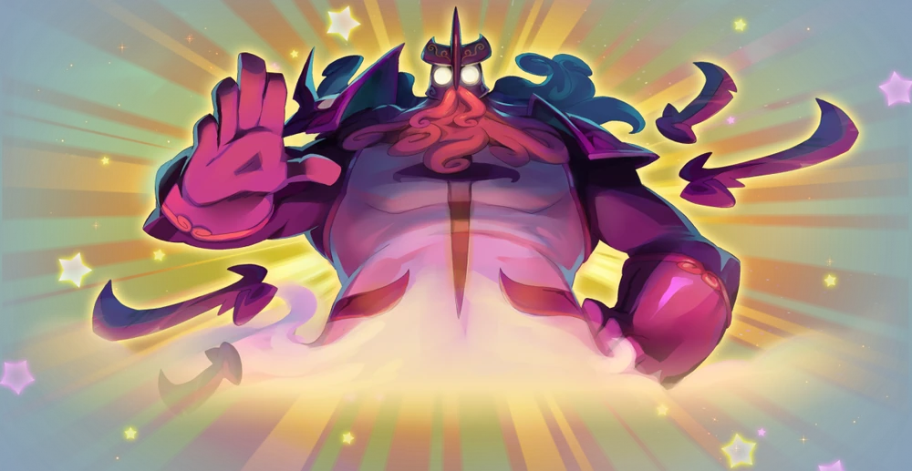
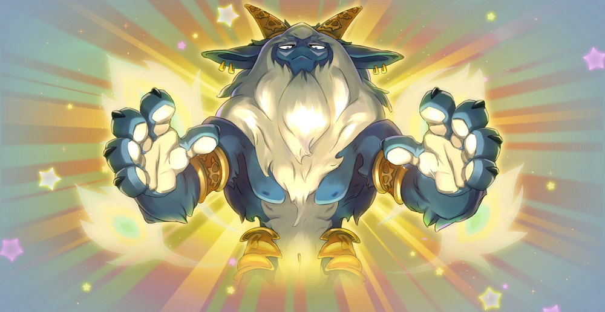
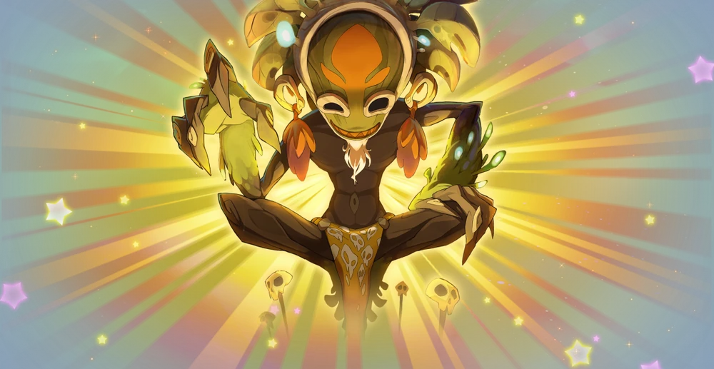
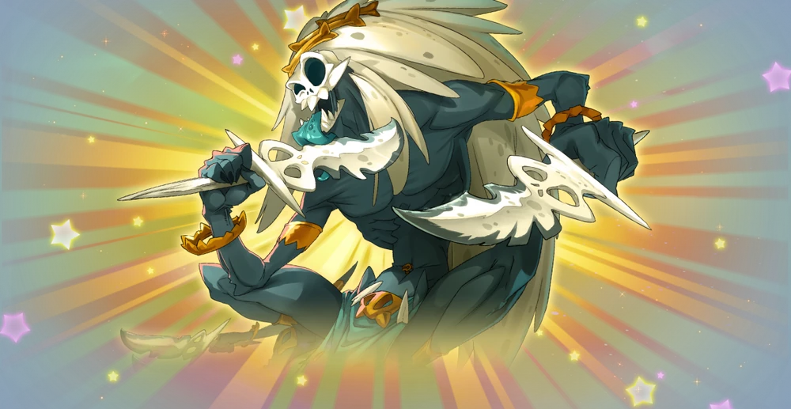
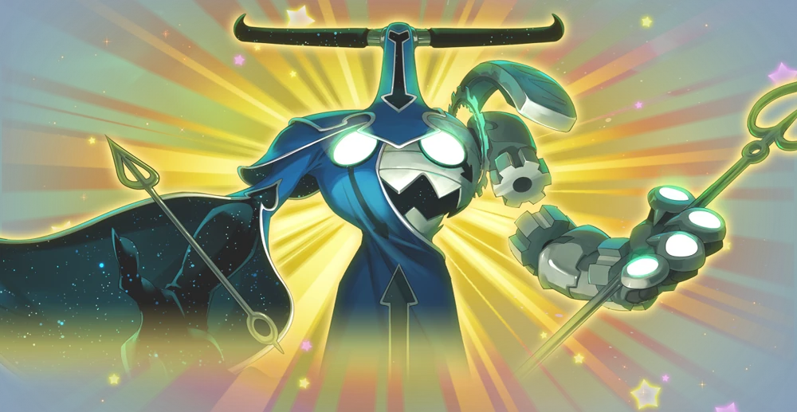

Crâ est la Déesse du jugement et de l'œil avisé, elle est aussi
l'une des Douze Dieux Majeurs. Ses puissantes flèches lui
permettent de nettoyer le champ de bataille et de tenir la
distance ! Archers hors pair, ses disciples, les Crâs mettent
toujours dans le mille.

Ecaflip
Ecaflip est le Dieu de la chance et de l'amour du jeu, il est
l'un des Douze Dieux Majeurs. Avec lui, ça passe ou ça casse !
Il ne fait jamais dans la demi-mesure, et ses disciples, les
Ecaflips non plus ! Ceux-ci n’hésitent d’ailleurs pas à faire
appel au hasard, et à parier leurs vies ou leur fortune… sur un
lancer de dés !

Eniripsa
Eniripsa est la Déesse de la médecine.

Enutrof
Enutrof est le Dieu de la fortune, et est l'un des Douze Dieux
Majeurs. Il aime amasser ce qui est précieux. Ses disciples, les
Enutrofs manipulent pelles et pioches comme personne, à la
recherche de trésors enfouis.

Féca
Féca est la Déesse protectrice aux boucliers et à la volonté de
fer, elle est aussi l'une des Douze Dieux Majeurs. Armée de son
bouclier, elle protège ses disciples, les Fécas de tous les
dangers du Krosmoz ! Ils adoptent d’ailleurs le même
comportement et n’hésitent pas à défendre leurs amis, hommes ou
Bouftous, contre les attaques les plus dévastatrices !

Iop
Iop est le Dieu de la bravoure et du courage, il est l'un des
Douze Dieux Majeurs. Il accorde sa force à tous ceux qui ont la
baston dans le sang ! Il méprise tellement les lâches que ses
disciples, les Iops sont tous de véritables brutes qui foncent
têtes baissées dans les combats… même ceux perdus d’avance !

Osamodas
Osamodas est le Dieu du règne animal, il est l'un des Douze
Dieux Majeurs. Son caractère un poil sauvage a déteint sur ses
disciples, les Osamodas, qui préfèrent la compagnie des bêtes à
celle de leurs semblables. Tofus, Bouftous et autre Prespics
leur obéissent d’ailleurs au doigt et à l’œil.

Sadida
Sadida est le Dieu de la nature.
Il est à l'origine de la création des Poupées Divines ayant séduit les Dragons Primordiaux, qui ont créé les Dofus Primordiaux.

Sram
Sram est le Dieu de l’ombre et des voleurs, il est l'un des
Douze Dieux Majeurs. Même s’ils opèrent en général la nuit, ses
disciples, les Srams aiment se rendre invisibles et créer des
doubles pour rendre leur présence encore moins perceptible !
Après tout, commettre ses larcins sans jamais être repéré, c’est
le but de tout Sram qui se respecte !

Xélor
Xélor est le Dieu du temps, il est l'un des Douze Dieux Majeurs.
Créateur de l’Horloge Divine, il maîtrise les rouages des
heures, des minutes et des secondes. Il a instauré la marche des
mois, des saisons et des années ! Ses disciples, les Xélors
savent d’ailleurs, tout comme lui, utiliser le temps à leur
avantage en ralentissant leurs adversaires ou en s’accélérant
eux-mêmes !